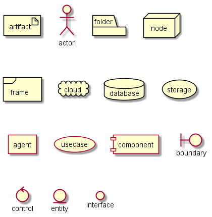
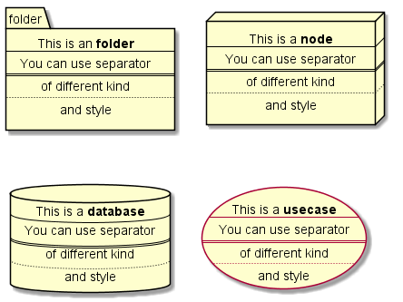
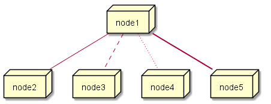
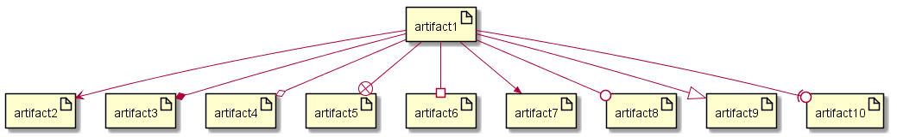
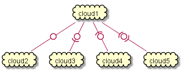
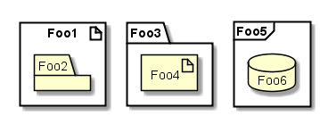
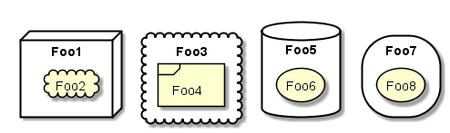

Deployment Diagram
This is only a proposal and subject to change.
Declaring element
@startuml artifact artifact actor actor folder folder node node frame frame cloud cloud database database storage storage agent agent usecase usecase component component boundary boundary control control entity entity interface interface @enduml

[] for a long description. @startuml folder folder [ This is an <b>folder ---- You can use separator ==== of different kind .... and style ] node node [ This is a <b>node ---- You can use separator ==== of different kind .... and style ] database database [ This is a <b>database ---- You can use separator ==== of different kind .... and style ] usecase usecase [ This is a <b>usecase ---- You can use separator ==== of different kind .... and style ] @enduml

Linking
@startuml node node1 node node2 node node3 node node4 node node5 node1 -- node2 node1 .. node3 node1 ~~ node4 node1 == node5 @enduml

Linking
@startuml artifact artifact1 artifact artifact2 artifact artifact3 artifact artifact4 artifact artifact5 artifact artifact6 artifact artifact7 artifact artifact8 artifact artifact9 artifact artifact10 artifact1 --> artifact2 artifact1 --* artifact3 artifact1 --o artifact4 artifact1 --+ artifact5 artifact1 --# artifact6 artifact1 -->> artifact7 artifact1 --0 artifact8 artifact1 --^ artifact9 artifact1 --(0 artifact10 @enduml

Linking
@startuml cloud cloud1 cloud cloud2 cloud cloud3 cloud cloud4 cloud cloud5 cloud1 -0- cloud2 cloud1 -0)- cloud3 cloud1 -(0- cloud4 cloud1 -(0)- cloud5 @enduml

Package
@startuml
artifact Foo1 {
folder Foo2
}
folder Foo3 {
artifact Foo4
}
frame Foo5 {
database Foo6
}
@enduml

@startuml
node Foo1 {
cloud Foo2
}
cloud Foo3 {
frame Foo4
}
database Foo5 {
storage Foo6
}
storage Foo7 {
storage Foo8
}
@enduml
